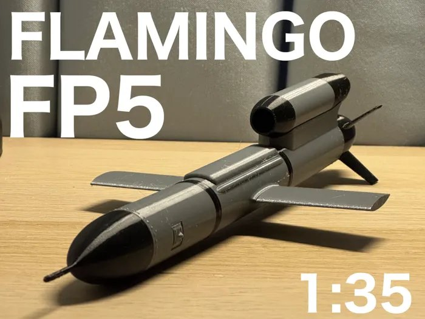

1FP-5 Flamingo (1:35 scale)DISPLAY MODEL

Winged drone · display model
Print83 g of plastic, about 5½ hours, 3 platesAlso needSuper glueFlies?No. It is a small copy of a real drone.
A small model of a large, long-range winged drone from Ukraine. The real one has long straight wings and a jet engine on its back, and flies very far. This model is glued together and sits on a shelf.
Think: long straight wings help a plane fly far. Could our drone use wings like these?
makerworld.com/en/models/2626260
Carrying capacity
12345
Speed
12345
Distance
12345
Can we build it?
12345
Total /20
Best job for this design:☐ Scout drone (light, fast, finds hot spots)☐ Water drone (big, carries water)☐ Neither
✎ What would we modify for our project? (to carry water, map the grass, fly farther ...)